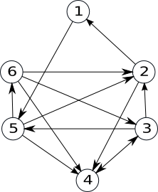

Graf orientat
Definiție. Se numeşte graf orientat sau digraf o pereche ordonată de mulțimi notată G=(V, U), unde:
• V este o mulțime finită şi nevidă ale cărei elemente se numesc noduri sau vârfuri;
• U este o mulțime de perechi ordonate de elemente distincte din V ale cărei elemente se numesc arce.
|  |
Notiuni:
• Extremități ale unui arc: pentru arcul u=(x,y), se numesc extremități ale sale nodurile x si y;
x se numește extremitate inițială;
y se numește extremitate finală;
y se numește succesor al lui x;
x se numește predecesor al lui y;
• vârfuri adiacente: daca într-un graf există arcul u=(x,y) se poate spune despre nodurile x și y că sunt adiacente;
• incidență:
dacă u1 si u2 sunt doua arce ale aceluiași graf, se numesc incidente daca au o extremitate comună.
Dacă u1=(x,y) este un arc într-un graf, se spune despre el si nodul x, sau nodul y, că sunt incidente;
|
Grade
Definiție. Fie G=(V, U) un graf orientat și x un nod al său.
• Se numeşte grad exterior al nodului x, numărul arcelor de forma (x,y) (adică numărul arcelor care ies din x), notat d+(x).
• Se numeşte grad interior al nodului x, numărul arcelor de forma (y,x) (adică numărul arcelor care intră în x), notat d-(x).
 |
Pentru graful alăturat:
• d+(2)=2
• d-(2)=3
|
Reprezentarea grafurilor orientate
Matricea de adiacență
Fie G=(V,U) un graf orientat cu n noduri, în care nu există mai multe arce de la un nod la altul.
Matricea de adiacență a grafului este o matrice cu n linii și n coloane și elemente 0 sau 1, astfel:
Ai,j=1 dacă există arcul (i,j)
Ai,j=0 dacă există nu arcul (i,j)
 |
Pentru graful alăturat, matricea de adiacență este:
0 0 0 0 0 1
1 0 0 1 0 0
0 1 0 0 0 0
0 1 0 0 0 0
0 0 0 1 0 0
1 1 0 1 0 0
Observăm că matricea de adiacență:
are zerouri pe diagonală (dacă în graf nu avem bucle)
nu trebuie să fie simetrică față de diagonala principală
|